Логарифм числа c по основанию a — такое число b, что 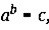т. е. показатель степени, в которую надо возвести основание, чтобы получить c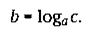
Основание и число, стоящее под знаком логарифма, должны быть положительными. Кроме того, предполагается, что a ↑ 1.
Если основание a = 10, то такой логарифм числа c называется десятичным и обозначается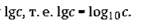Свойства логарифмов
Свойства степеней и логарифмов связаны между собой:
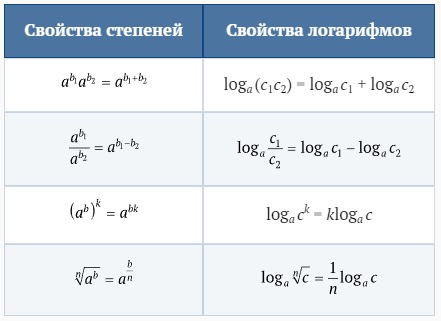Основное тригонометрическое тождество
Равенствавыражают одну и ту же связь между числами a, b и c.
Подставляя в равенство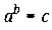редставление числа b в виде логарифма, получаем основное логарифмическое тождество: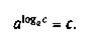
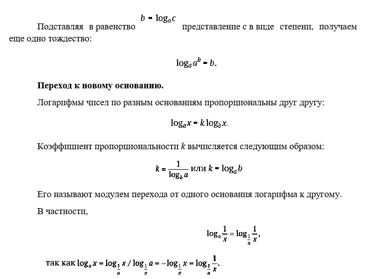
Первые таблицы логарифмов были фактически построены немецким математиком М. Штифелем (1487—1567).
Зачем нужны логарифмы? Однажды на такой вопрос ответил П. Лаплас, который сказал, что изобретение логарифмов удлинило жизнь астрономов. Действительно, первое назначение логарифмов состояло в упрощении сложных вычислений, при котором умножение с помощью логарифмов заменялось сложением. Еще недавно каждый инженер носил в кармане логарифмическую линейку, с помощью которой можно было выполнять разные подсчеты, выполняемые сейчас на калькуляторе.
С помощью логарифмов можно решать задачи, обратные возведению в степень: если ax = b, то неизвестное x можно записать как logab. При этом важна не сама возможность записи, а то, что, меняя b, т. е. рассматривая x = logab как функцию от b, мы обнаруживаем новый характер функциональной зависимости.
Логарифмические функции значительно пополнили запас зависимостей, доступных сравнительно простому изучению.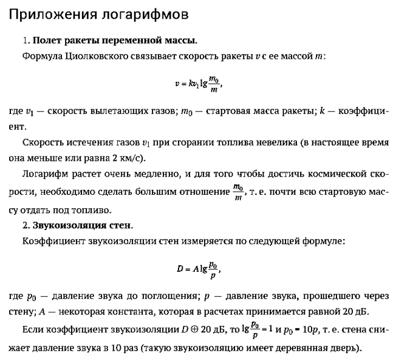
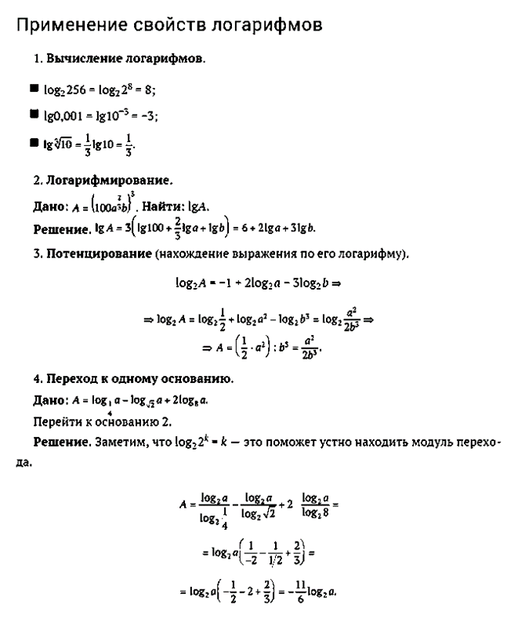
Вопросы и задания
1.Вычислите
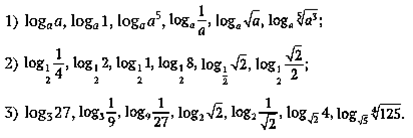2.Прологарифмируйте данное выражение по основанию a:
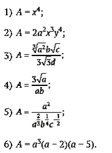3.Найдите выражение A по логарифму:
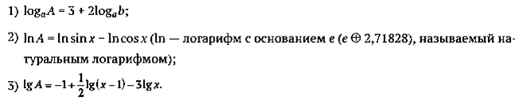4.Определите, какое из чисел больше:
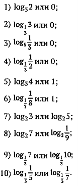5.Замените логарифмы 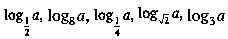логарифмами по основанию 2.
6.Найдите:
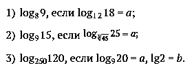